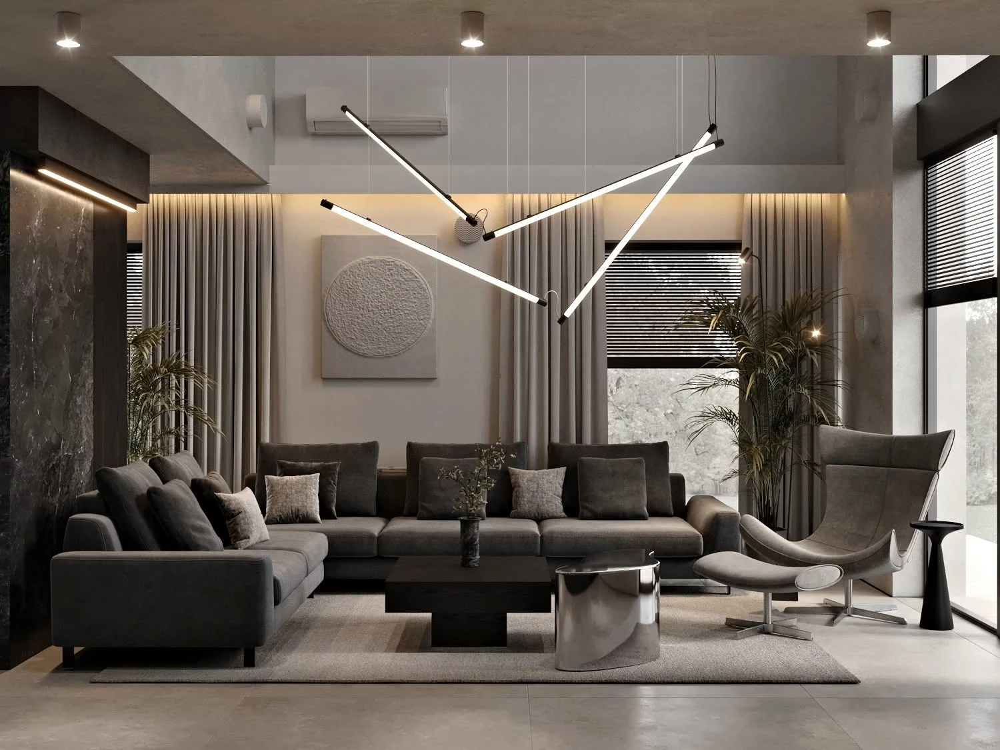
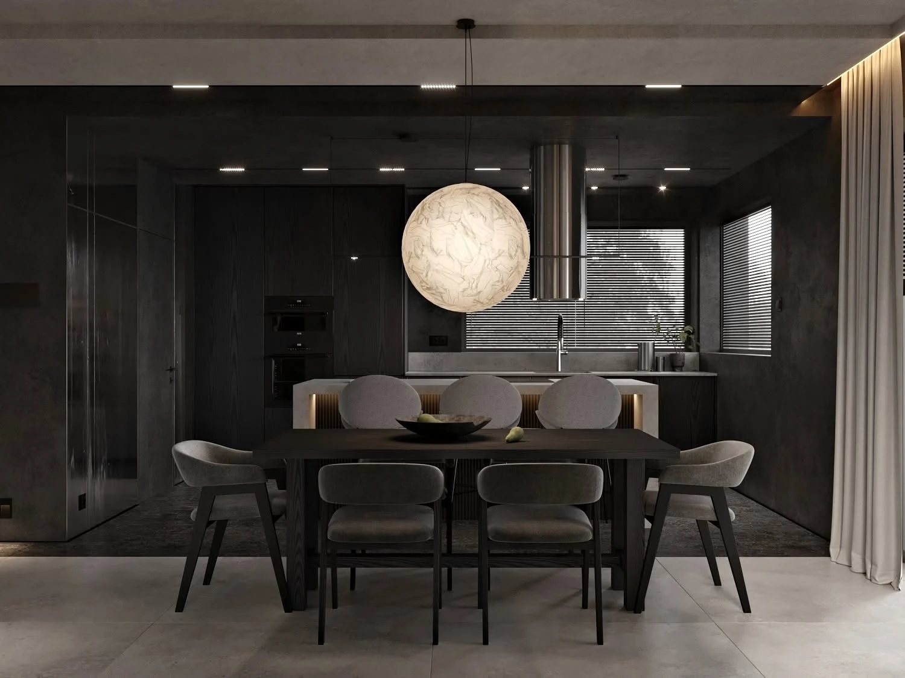
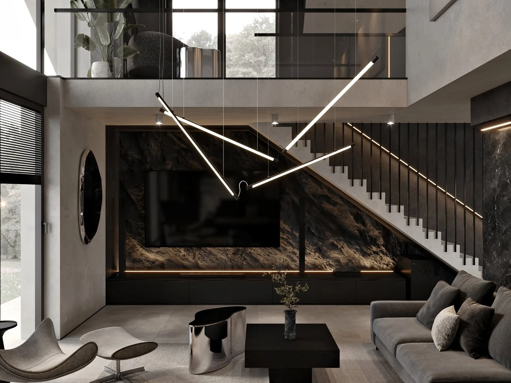
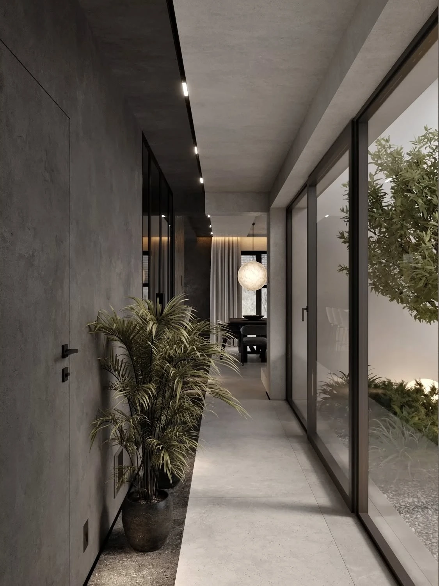
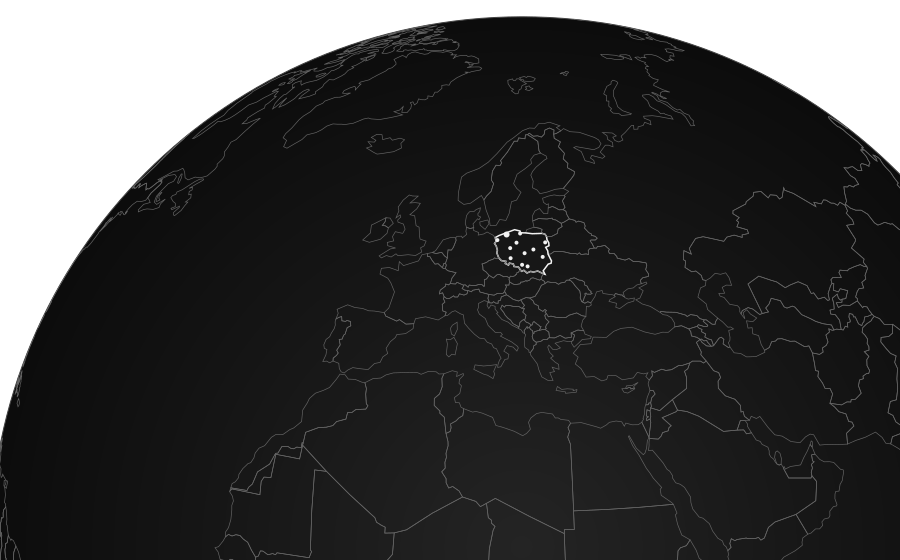

Projektujemy.
Łączymy.
Tworzymy.
Funkcja, estetyka i przemyślany detal.
Wnętrza dopasowane do Ciebie.
DOM NOWOCZESNY / DOBRY UKŁAD
Wybrane ujęcia
DOM NOWOCZESNY / PROJEKT STUDIA

Jadalnia i kuchniaDOM NOWOCZESNY
Salon ze schodamiDOM NOWOCZESNY
KomunikacjaDOM NOWOCZESNYCztery ujęcia jednego projektu. Wizualizacje: Dobry Układ — Sandra Białkowska. Zobacz publikację studia
ZAKRES WSPÓŁPRACY
Od pomysłu
do dobrego układu.
DOBRY UKŁAD / KOSZALIN · POLSKA
Zaufanie, które
łączy całą Polskę.
Z Koszalina. Z myślą o ludziach, miejscach i wnętrzach, w których dobrze się żyje.
wnętrz*
* Wartość robocza — do potwierdzenia ze studiem.

- Koszalin
- Warszawa
- Kraków
- Wrocław
- Gdańsk
- Poznań
- Łódź
- Szczecin
- Lublin
- Katowice
- Bydgoszcz
- Białystok
Wiedza z praktyki
Zobacz sklep dla architektów04 / DLA PROJEKTANTÓW WNĘTRZ
Projektuj świadomie.
Autorskie kursy, poradniki i narzędzia. Wiedza, którą wykorzystasz w swoich projektach.
Kurs podstawowy pCon.planner
Od poznania interfejsu po samodzielny układ i pierwszy model wnętrza 3D.
Kurs zaawansowany pCon.planner
Modelowanie detali, projekt kuchni, materiały, światło i tworzenie wizualizacji.
Pakiet pCon.planner
Spójna ścieżka nauki — od pierwszego projektu po bardziej złożone wizualizacje.
05 / KONTAKT
Porozmawiajmy
o Twoim projekcie.
Opowiedz nam o swojej inwestycji.
Razem poszukamy dobrego układu.